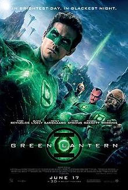
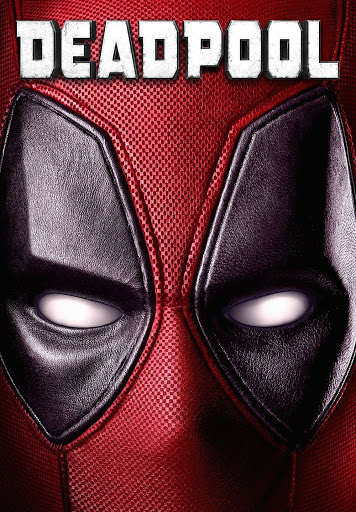
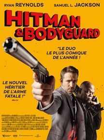
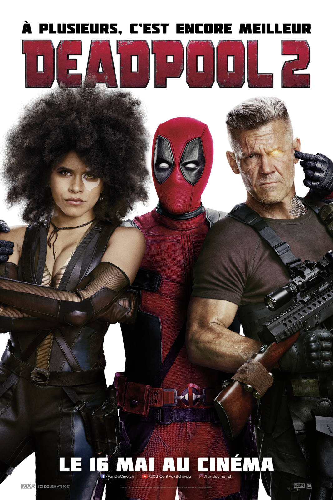
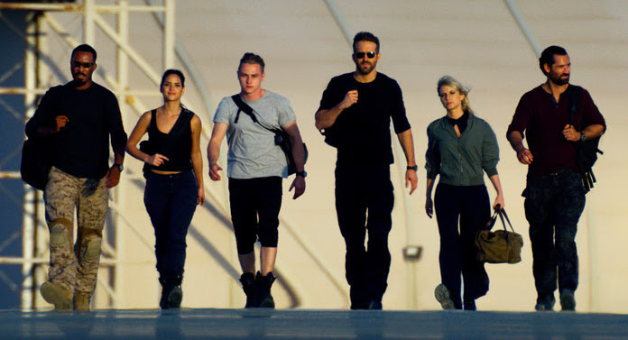

Green Lantern
2011
Description:
Lorsque l'entité maléfique Parallax s'échappe de sa prison aux confins de l'univers et parvient à blesser mortellement Abin Sur, le seul gardien capable de l'emprisonner, le corps des Green Lantern (gardiens ancestraux de la paix dans l'univers et maîtrisant la force verte de la Volonté grâce à leur anneau), dont Abin Sur faisait partie, se retrouve démuni face à leur adversaire qui maîtrise la force jaune de la peur. C'est sans compter sur le pilote d'aviation chevronné Hal Jordan, casse-cou et téméraire, qui va obtenir l'anneau de pouvoir d'Abin Sur mourant et devenir le dernier espoir des Green Lantern et de la Terre, à présent menacée par Parallax....
DeadPool
2016
Description:
Le convoi d'Ajax est attaqué par Deadpool. Il commence par massacrer les gardes à l'intérieur d'une voiture, avant de s'en prendre au reste du convoi. Après une longue escarmouche, où il est contraint de n'utiliser que les douze balles qu'il lui reste, Deadpool capture Ajax (dont le véritable nom est Francis, ce que Deadpool ne cesse de lui rappeler). Après l'intervention de Colossus et Negasonic venus empêcher Deadpool de causer plus de dégâts et le rallier à la cause des X-Men, Ajax parvient à s'échapper en retirant le sabre de son épaule. Il apprend par la même occasion la véritable identité de Deadpool : Wade Wilson. En flashbacks, on revient sur la vie de mercenaire de Wade Wilson et sur sa liaison avec sa petite amie Vanessa Carlysle, une ancienne prostituée avec laquelle il va vivre pendant un an avant de lui demander sa main. C'est à la fin de cette année que le couple apprendra le cancer en phase terminale de Wade. Il choisit de suivre un inconnu qui lui propose un traitement qui fera de lui un super-héros. Il se porte volontaire pour le programme pour Vanessa. Une fois dans le miteux laboratoire secret en sous-sol, les scientifiques dirigés par Ajax le torturent pour réveiller ses gènes mutants. Alors qu'Ajax lui fait subir une énième séance de torture en le plaçant dans une machine qui, en filtrant l'oxygène, l'empêchera de respirer correctement et le fera suffoquer, son gène mutant se réveille finalement. La machine cause également de terribles dommages à son corps et le défigure. Par la même occasion, Ajax révèle que Wade ne sera jamais un héros : il compte lui mettre un collier de contrôle et en faire un esclave. Rendu presque immortel, Wade s'évade du laboratoire. Il rejoint ensuite le bar des mercenaires et se choisit un surnom, Deadpool1 avant de commencer à se constituer un costume sur les conseils de son ami barman, surnommé la Fouine. Il commence ensuite une lutte contre l'organisation d'Ajax afin de le retrouver. Celui-ci a avoué être le seul à pouvoir le guérir, lui permettant ainsi de retrouver l'amour de Vanessa à laquelle il n'a pas donné signe de vie depuis. L'histoire reprend alors son cours, et on voit Deadpool dans une sorte de maison délabrée tenue par Al, une vieille femme aveugle accro à la cocaïne qui lui sert de colocataire. Là-bas, il reprend des forces - il s'est tranché la main pour échapper à Colossus - tandis qu'Ajax se soigne de son côté. Ce dernier décide de kidnapper la petite amie de Deadpool, le forçant à intervenir dans un combat épique dans les ruines d'un héliporteur du SHIELD. À la fin de ce combat durant lequel Vanessa manque de subir le même sort que Deadpool, ce dernier terrasse Ajax et le tue, après que celui-ci avoue lui avoir menti : il ne peut le guérir. Tout se termine néanmoins bien puisque Vanessa accepte la nouvelle apparence de Wade.
Hitman & Bodyguard
2017
Description:
Michael Bryce, l'un des meilleurs gardes du corps au monde, est engagé pour protéger un tueur à gages, Darius Kincaid. Ils ont 24 heures pour rejoindre La Haye, pour que Kincaid témoigne et apporte les preuves des crimes contre l'humanité perpétrés par Vladislav Dukhovich, le dictateur biélorusse, devant la Cour pénale internationale. Les autres témoins ont soit été assassinés soit n'ont aucune preuve de ces crimes malgré leur témoignage et Kincaid est donc le dernier rempart à l'acquittement du dictateur et à son retour au pouvoir. Mais ce dernier va tout tenter pour les arrêter.
Deadpool 2
2018
Description:
Deadpool se voit contraint de rejoindre les X-Men : après une tentative ratée de sauver un jeune mutant au pouvoir destructeur, il se retrouve dans une prison anti-mutants. Arrive Cable, un soldat venant du futur et ayant pour cible le jeune mutant, en quête de vengeance. Deadpool décide de le combattre. Peu convaincu par les règles des X-Men, il crée sa propre équipe, la « X-Force ». Mais cette mission lui réserve de grosses surprises, des ennemis de taille et des alliés indispensables.
Six Underground
2019
Description:
Six milliardaires simulent leurs propres morts pour former une unité d'élite secrète ayant pour mission de neutraliser de puissants criminels.
